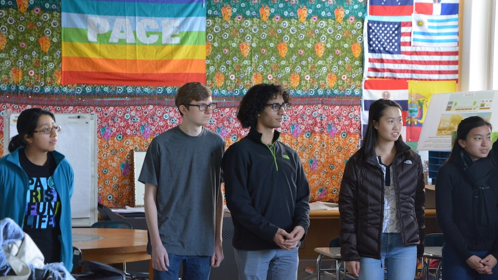
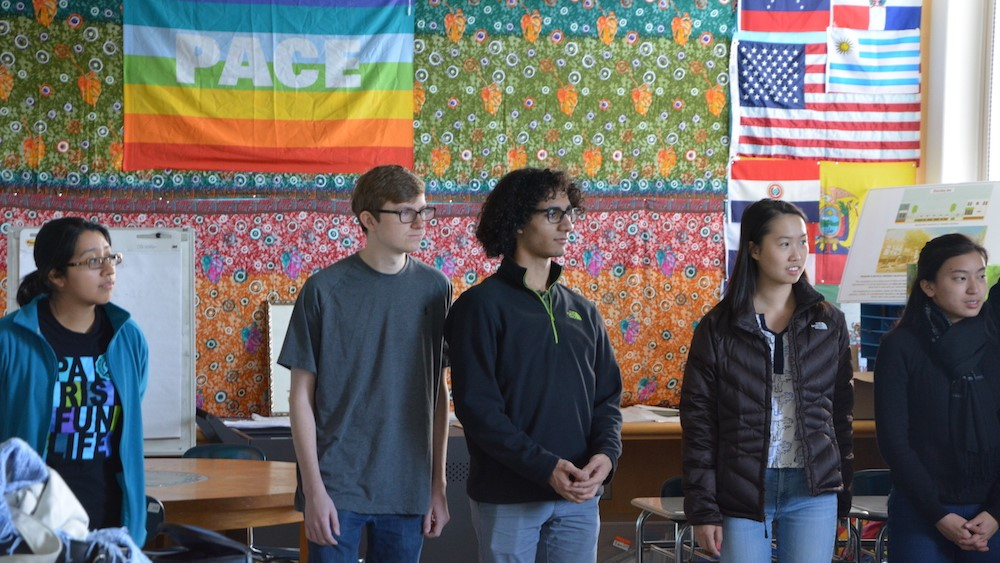

About
 

What We Do
We are an undergraduate student organization at Yale University dedicated to introducing students to computer science starting at a young age. Every week, Yale students teach computing lessons at several schools in the New Haven district, engaging the students with online lessons, group activities, and class-wide demonstrations. Our organization receives teacher training from Lead Program Manager of Microsoft Teals, Nathaniel Granor (Yale alumnus ’09) and David Weinreb, a 6th grade teacher at Fair Haven School.
Our Impact
History
Code Haven was founded in Fall 2016 by Annie Chen ‘19 and Dennis Duan ‘19 with the support of Professor Dana Angluin and Yale alumnus Nathaniel Granor ‘09. A pilot semester was launched in Dave Weinreb’s sixth grade classroom at Fair Haven School, with 18 students and 16 mentors. In October 2016, Code Haven received funding from Google IgniteCS for its effort in impacting the local community through computer science mentorship. By the beginning of 2017, Code Haven grew into a student organization with over 25 members, serving nearly 100 students in New Haven and implementing a computer science curriculum in 7 middle-school classrooms.